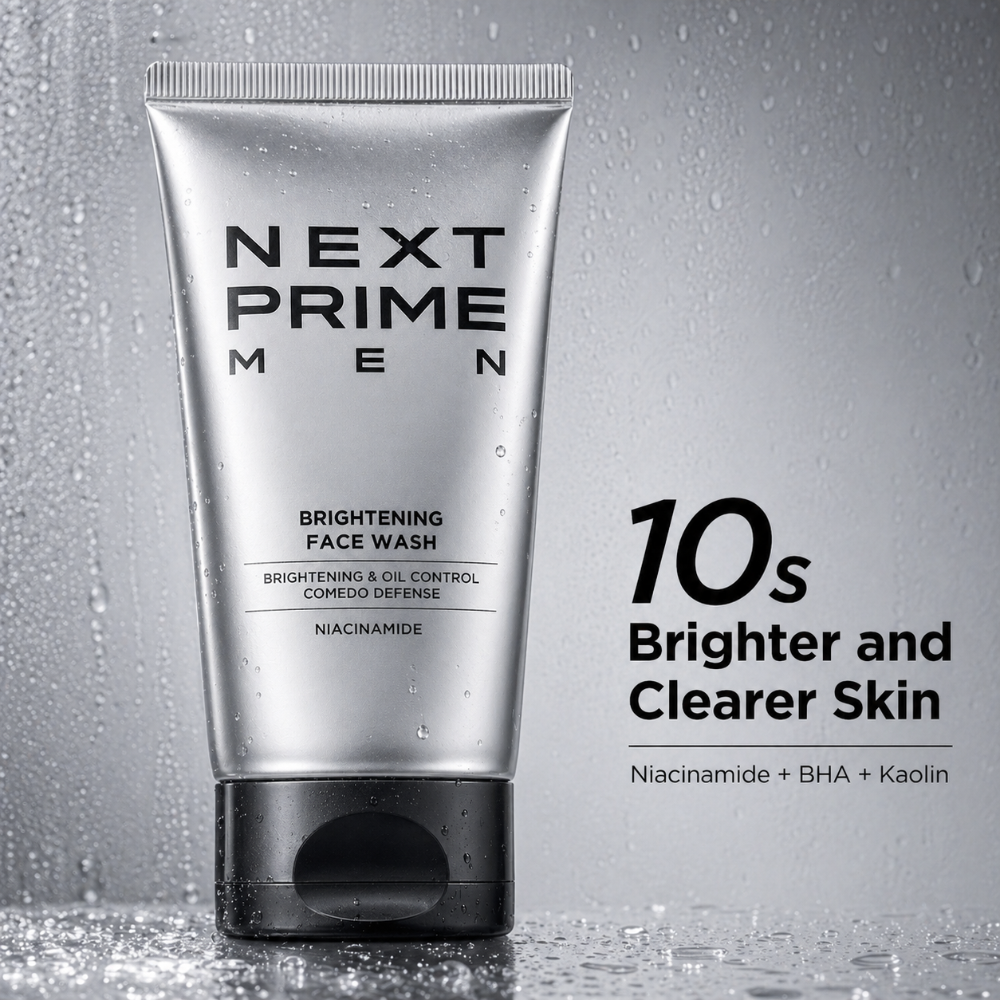
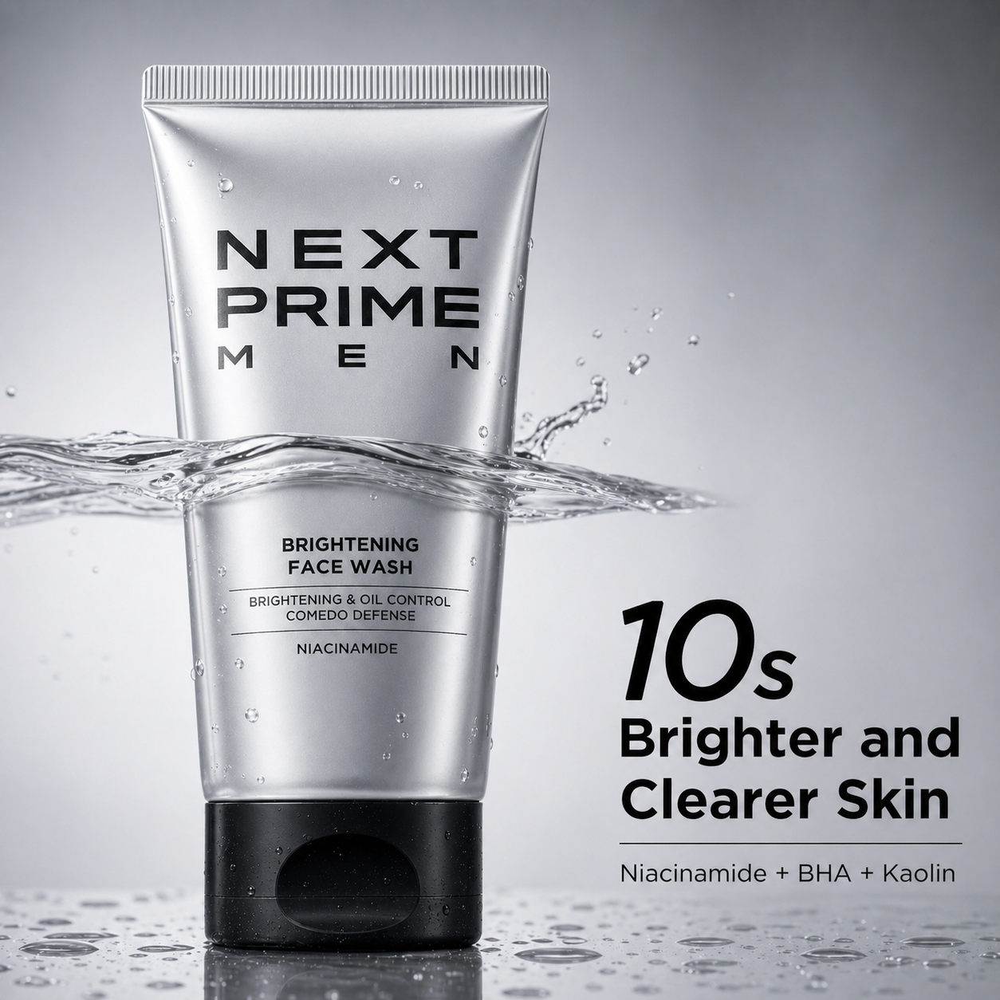

图文制作进度与流程搭建说明
当前已完成首轮流程搭建与 Brightening Face Wash 实拍水感首测资产沉淀。流程已可直接跑首轮 A/B，且 v2 图稿已补齐归档用于你下一步投放选择。
当前进度同步
- 承接主文档、测试总表、4 张需求单、复盘表已落地。
- 首轮 4 图 v1 与 v2 均已归档到同一输出目录。
- 复盘指标已收敛为：CTR、CTR(link click)、ROAS、CVR。
- 品牌边界已锁定为 Next Prime，不混入 Leona/BOdibreze 内容。
关键文档索引
| 类型 | 路径 | 说明 |
|---|---|---|
| 承接文档 | NEXTPRIME_图文策划承接文档.md | 流程与资产总入口 |
| 测试总表 | test-plan/Brightening_Face_Wash_实拍水感_首轮_测试总表.md | A1/A2/B1/B2 首轮策略 |
| 需求单 | workflow-docs/Brightening_Face_Wash_实拍水感_首轮/01~04_需求单.md | 每张图的单变量执行要求 |
| 复盘表 | workflow-docs/Brightening_Face_Wash_实拍水感_首轮/05_复盘记录表.csv | 指标与结果标签记录 |
| 出图日志 | docs/run-log.md | v2 防变形优化记录 |
| 追溯清单 | data/production-trace.json | 出图树状栏的数据源 |
v2 出图预览（实拍水感）

